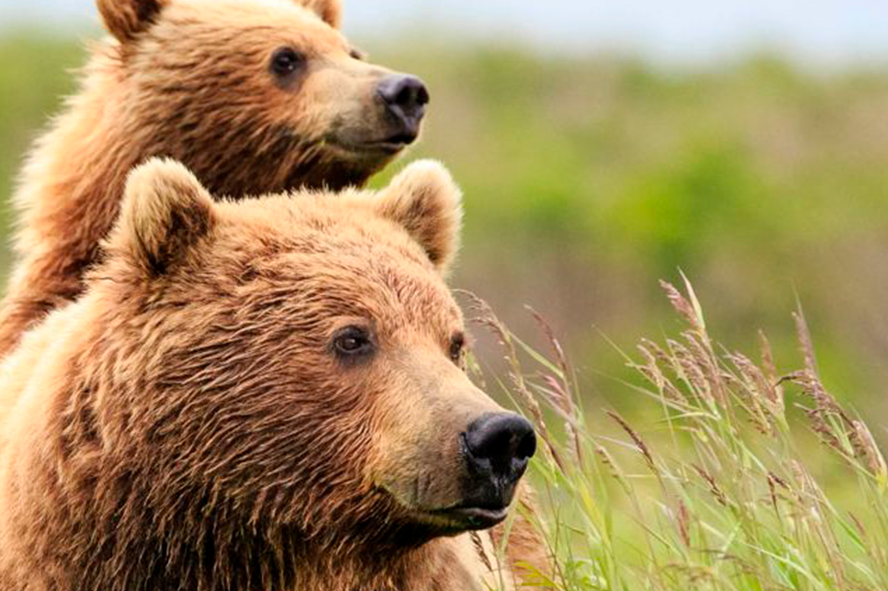
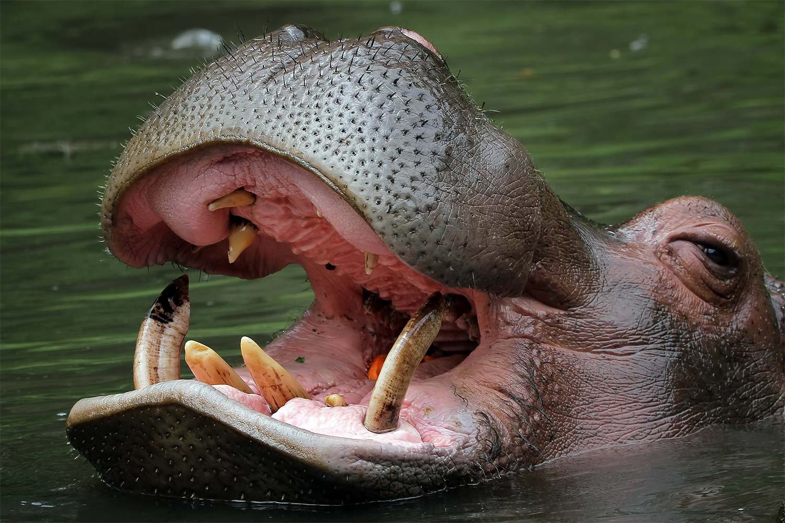

 son mamíferos caracterizados por su gran tamaño y de la que se conocen ocho especies diferentes, siete de las cuales viven en el hemisferio norte a excepción del oso de anteojos que vive en América del Sur. Muchas de estas especies se encuentran los mayores carnívoros que pueblan la Tierra. Los osos cuentan con una enorme y fuerte mandíbula que les permite alimentarse de carne además de frutos, raíces e insectos.
Mamiferos
-
Mamiferos
Los mamíferos pertenecen al grupo de los vertebrados. Se caracterizan por tener el cuerpo cubierto de pelaje, por nacer del vientre materno (vivíparos) y por alimentar a las crias con leche por medio de glándulas mamarias. Los mamíferos son animales de sangre caliente, es decir, que son capaces de regular la temperatura de su cuerpo para que se mantenga constante independientemente de que haga frío o calor, y respiran a través de pulmones.
Según el tipo de alimentación, los mamíferos se clasifican en: herbívoros, es decir, los que se alimentan de plantas, como el caballo, la oveja o el elefante; carnívoros – que comen carne animal-, como los leones, los lobos y los osos; y omnívoros, que se nutren tanto de carne animal como de vegetales, como los humanos y algunos primates.
En el mundo existen unas 5.500 especies de mamíferos diferentes.
-
 Son animales mamíferos, exclusivamente herbívoros cuya característica principal –además
del gran tamaño– es su larga trompa y sus enormes orejas. Se organizan en manadas de
unos 20 miembros, miden casi 4 metros los ejemplares más grandes y pueden llegar a pesar
más de 6.000 kilos. Suelen vivir alrededor de 70 años y tienen el periodo de gestación
más largo de todos los animales: 22 meses. Nada más nacer, las crías ya pesan más de 100
kilos.
Debido a su gran tamaño, tienen también un cerebro muy grande por lo cual son animales
muy inteligentes a los que se asocian comportamientos como el duelo por una pérdida, la
asociación con otros miembros, el uso de herramientas, la adopción, el juego e incluso
el autorreconocimiento.
Son animales mamíferos, exclusivamente herbívoros cuya característica principal –además
del gran tamaño– es su larga trompa y sus enormes orejas. Se organizan en manadas de
unos 20 miembros, miden casi 4 metros los ejemplares más grandes y pueden llegar a pesar
más de 6.000 kilos. Suelen vivir alrededor de 70 años y tienen el periodo de gestación
más largo de todos los animales: 22 meses. Nada más nacer, las crías ya pesan más de 100
kilos.
Debido a su gran tamaño, tienen también un cerebro muy grande por lo cual son animales
muy inteligentes a los que se asocian comportamientos como el duelo por una pérdida, la
asociación con otros miembros, el uso de herramientas, la adopción, el juego e incluso
el autorreconocimiento.

Los hipopótamos son grandes mamíferos semiacuáticos originarios del África subsahariana. Aunque su nombre procede del griego y significa "caballo de río" (por el tiempo que pasan en el agua), sus parientes vivos más cercanos son las ballenas, los delfines y los cerdos. No saben nadar, respirar bajo el agua ni flotar, pero han desarrollado una técnica que les permite dormir la siesta bajo el agua. Estos enormes herbívoros son conocidos por sus enormes dientes, su naturaleza agresiva y el mito de que sudan sangre. Esto es lo que hay que saber sobre uno de los animales más peligrosos de África.
-
Mas informacion
https://www.nationalgeographic.com.es/animales/osos https://www.nationalgeographic.es/animales/hipopotamo https://www.nationalgeographic.com.es/animales/elefantes https://zoobarcelona.cat/es/animales/mamiferos#:~:text=Los%20mam%C3%ADferos%20pertenecen%20al%20grupo,por%20medio%20de%20gl%C3%A1ndulas%20mamarias.